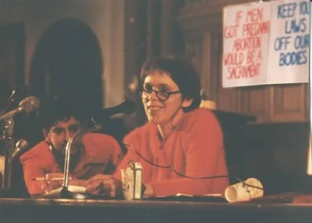
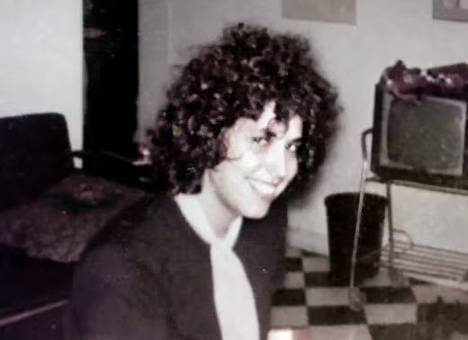
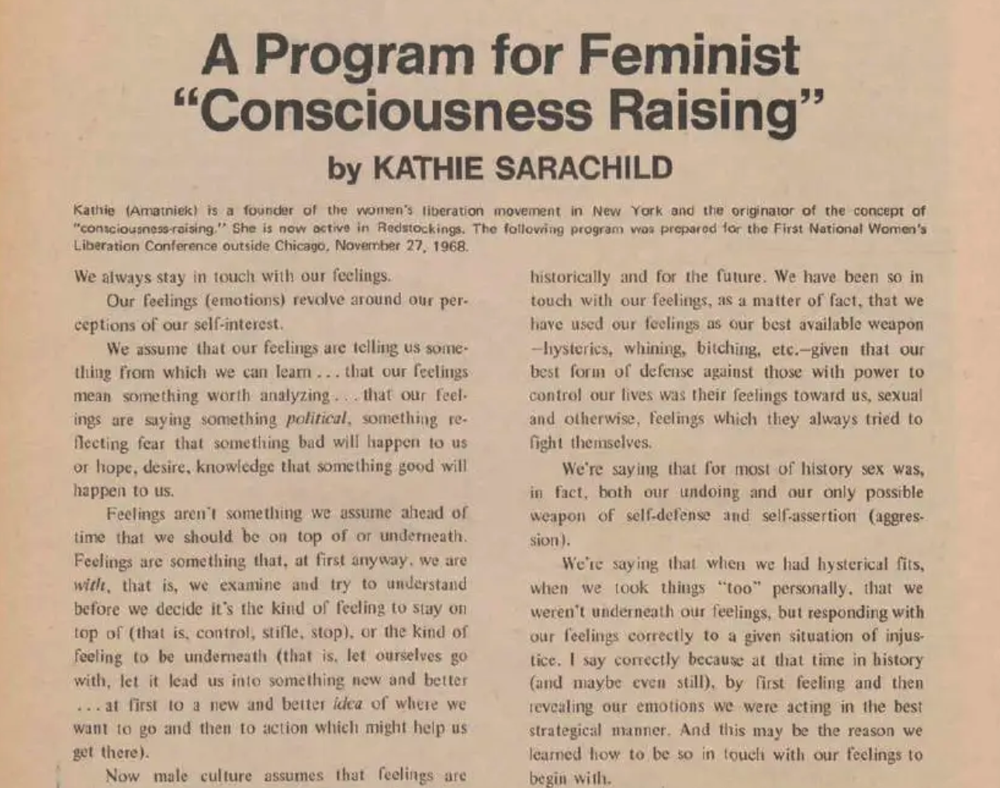
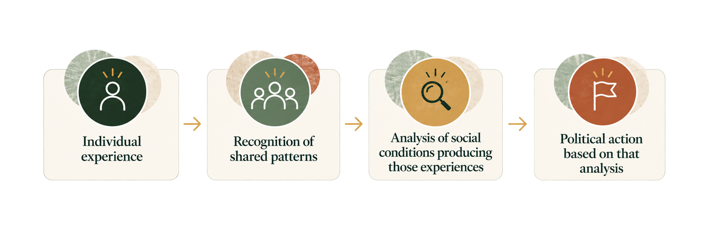

“In our groups, let’s share our feelings and pool them. Let’s let ourselves go and see where our feelings lead us. Our feelings will lead us to ideas and then to actions.”
— Kathie Sarachild, 1970
Reflect
Reflection
Think of a negative educational experience from any point in your life.
It might have involved formal education, workplace training, or informal learning.
Describe your experience*. What happened? What made the experience negative for you?
*If you'd rather not disclose personal information, describe an experience you witnessed rather than personally experienced.
Respond to the prompt to unlock the rest of the course.
Background & Origins
Many of us have been taught from a very early age to distrust other females, to be protective of our families and bosses, to see marriage as the ultimate form of happiness and fulfillment, and to be both emotionally and economically dependent on the various men in our lives. […] Consequently, many of us feel that everything limiting and painful in our lives is due to our own failings and that, if something weren’t wrong with us in the first place, we would be happy and fulfilled in our female role.
Sharpe et al., 2017, as cited in Engelstad, 2026, p. 3
Conscisouness-raising came about against the backdrop of the Women's Liberation Movement in 1960s.
That decade saw multiple cultural, political, and social changes that galvanized women to move from private domestic discontent, to organized public action and activism. In 1960, the Food and Drug Administration approved the birth control pill, giving women unprecedented control over family planning and fertility. In 1963, Betty Friedan published The Feminine Mystique, which challenged the prevailing notion that women could only find fulfillment through domesticity. That same year, Congress passed the Equal Pay Act, making it illegal to pay men and women different wages for performing the exact same work.
In 1968, the New York Radical Women--one of the original women's liberation groups--organized a famous protest at the Miss America pageant. As they marched the Atlantic City boardwalk ahead of the pageant, they threw bras, curlers, and girdles into what they called a freedom trashcan (Baker, n.d.).
As Engelstad (2026) writes:
At the time, sexism and gendered oppression were not well known or understood phenomena. Instead, women were generally seen as inherently submissive, weak, irrational, emotional, and caring, and therefore best suited for domestic labour and submission to a male head of household. Individual women would often take it as a personal failure if they struggled to conform to these expectations.
Engelstad, 2026, p. 3
The Women’s Liberation movement turned all of this on its head, though. No aspect of women's lives went unexamined, including "all social norms, daily interactions, and the supposedly natural logic of sexual difference hiding in plain sight" (Kinnamon, 2024, p. 150).
Kathie Sarachild is a writer, radical feminist, and theoretician. Born Kathie Amatniek, she changed her last name to Sarachild to honor her mother. She was a member of both the Redstockings and the New York Radical Women, two feminist groups founded in the 1960s.
In the late 1960s, Sarachild coined the phrase "Sisterhood is powerful" (Redstockings, n.d.), and she became the person most closely associated with consciousness-raising within the Women's Liberation Movement.

Kathie Sarachild. Photograph from Redstockings (n.d.; see References).
Consciousness-Raising
The purpose of women's liberation was to defeat male supremacy and give women equality. We felt this was such a monumental task. How to approach it? Consciousness-raising seemed to be what was needed.
Sarachild, 1975, p. 147
The exact origins of consciousness-raising as a practice can’t be attributed to a single person, and in fact, historical accounts trace elements of the practice to labor and Black liberation organizing, in which participants examined their experiences collectively as a means of developing political understanding (Engelstad, 2026).
That said, the termconsciousness-raising was coined by the New York Radical Women in late 1967 (Nachescu, 2008, p. 31).
According to accounts of the group’s early meeting, Anne Forer suggested that members describe ways they had experienced oppression as women because she wanted to “raise” her own consciousness about women’s oppression (Sarachild, 1975, pp. 144–150).

Anne Forer. Photograph from The New York Times (see References).
Sarachild subsequently adopted consciousness-raising as the name for the social practice. She and the New York Radical Women were instrumental in popularizing the practice. In 1968, she wrote "A Program for Feminist Consciousness-Raising" which was published in Notes from the Second Year: Women's Liberation, and she later provided a more extensive explanation of the practice in the article “Consciousness-Raising: A Radical Weapon.”
Winkler (1997) suggests that part of CR's appeal for Sarachild was that it offered radical feminists a way of generating knowledge outside the existing theoretical frameworks of the male-dominated Left, which tended to sideline questions of gender oppression. As an illustration, Winkler points to a CR exercise of Sarachild's that has since become common in introductory women's studies courses: examining the gendered expectations and assumptions built into norms around women's appearance (Winkler, 1997).

“A Program for Feminist Consciousness-Raising” (Sarachild, 1970; see References).
Nachescu (2008) describes this as a founding moment for women’s liberation: alongside the term itself, the group articulated the idea that small, women-only groups should be the movement’s preferred organizing tactic (p. 31).
In the end the group decided to raise its consciousness by studying women’s lives by topics like childhood, jobs, motherhood, etc. We’d do any outside reading we wanted to and thought was important. But our starting point for discussion, as well as our test of the accuracy of what any of the books said, would be the actual experience we had in these areas.
Kathie Sarachild, “Consciousness-Raising: A Radical Weapon” (1970, p. 145)
Consciousness-raising groups began as an extension of the New York Radical Women's regular gathering. The women agreed to spend time together discussing their experiences with marriage, work, sexuality, motherhood, housework, and other aspects of their lives.
The women committed to discussing "who and what has an interest in maintaining the oppression in our lives" (p. 145) with the explicit goal of galvanizing each other to "actions brought to the public for the specific purpose of challenging old ideas and raising new ones."
The proliferation of consciousness-raising groups was quick in the movement's early years. Engelstad (2026) estimates that by 1973, over 100,000 women in the U.S. had joined a consciousness-raising group, and that the practice had even spread internationally.
In fact, according to Kinnamon (2024), consciousness-raising became a "central method of the twentieth-century feminist movement" (p. 151).
In practice, consciousness-raising was meant to begin with women’s real, lived experiences rather than existing theory of women’s oppression, which had been critiqued by women as having been produced by men, their oppressors (Sarachild, 1975).
Members of consciousness-raising groups typically considered a particular subject and took turns describing their own experiences with it. Many groups had explicit rules that asked them to wait to debate, evaluate, or theorize on those experiences, instead allowing participants the space to articulate and establish what had actually happened in their lives. The group could then compare accounts and look for recurring patterns across what they previously thought had been individual, idiosyncratic experiences (Engelstad, 2026; Kinnamon, 2024; Sarachild, 1975).
Consciousness-raising in practice moved through four related stages:

Consciousness-raising was never meant to end with personal disclosure, but rather provide the empirical material from which an explanation could be constructed and then ultimately acted upon. Fundamentally, it was considered a method for investigating women’s social conditions, developing feminist theory from lived experience, and using the knowledge produced through that inquiry as a basis for political action (Kinnamon, 2024; Sarachild, 1975).
To understand the kinds of insights that that could arise from a consciousness-raising session, it can be helpful to analyze an example. Consider the distribution of household labor:
A woman who performs substantially more domestic work than her husband might initially explain the situation through the particular characteristics of her marriage. She might believe that she simply:
married an inconsiderate man,
failed to negotiate responsibilities effectively, or
is uniquely bothered by household disorder.
These explanations point to individual failings rather than systemic issues, and cause her to live quietly with her anger, disappointment, resentment, and whatever other negative emotions arise from her situation.
But now imagine that this woman attends a consciousness-raising group session, and through sharing her experience and listening to the experiences of others, learns that many other women are living under similar arrangements and equally discontent with their situations. Explanations beyond the woman's own personal failing now become plausible explanations for her anger and resentment. Rather than asking only why one husband behaves in a particular way, participants can ask why domestic labor is repeatedly assigned to women across different households.
Significance of Consciousness-Raising
We assume that our feelings are telling us something from which we can learn… that our feelings mean something worth analyzing.
Sarachild (1970, p. ???)
From the beginning, consciousness-raising was meant to challenge traditional methods of knowledge production, as well as ideas about who in society had the authority to determine what counted as valid knowledge. As Sarachild (1975) wrote, the "starting point for discussion, as well as our test of the accuracy of what any of the books said, would be the actual experience we had in these areas" (p. 145).
In consciousness-raising, lived experience is a valid and vital form of evidence. Personal stories are not seen as merely anecdotal, but as data that can reveal broader social patterns when shared and analyzed collectively.
Consciousness-raising challenged the assumption that only credentialed experts—historically men—could produce legitimate knowledge about women’s lives. By treating ordinary women as capable analysts of their own conditions, consciousness-raising redistributed epistemic authority: the people living an experience were positioned as those best placed to investigate and explain it.
Sarachild explicitly objected to the assumption that established authorities already possessed the conceptual and theoretical tools necessary to explain women’s experiences. She argued that instead, women could investigate their own conditions collectively and develop theory from what they discovered.
This critique extended into history as well. Aware that women’s history had been distorted by a patriarchal politics of knowledge production, many consciousness-raising groups helped spark a resurgence of interest in women’s history, generating study groups that worked to recover what that politics had erased (Nachescu, 2008, p. 31).
This raises a question that feminist epistemologists continue to pursue—who is recognized as a credible knower, and whose testimony is dismissed before it can be heard?
In practice, consciousness-raising is simultaneously experiential and analytical. Personal experiences constituted a starting point for inquiry, but individual interpretation was not necessarily its endpoint. Experiences became especially politically revealing when compared, questioned, and situated alongside the experiences of other women.
Scholars have examined consciousness-raising as an epistemological practice—in other words, a method concerned with how knowledge is produced and justified. When participants discover that seemingly personal experiences recur systematically, they acquire evidence that explanations located solely within individuals may be insufficient. In this way, “consciousness-raising is recognised as epistemically forceful in a range of philosophical literature” (Engelstad, 2026, p. 3).
Knowledge, in this view, is not exclusively produced by outside observers, but can also be built collectively by people reflecting on and theorizing from their own lives.
The decision to emphasize our own feelings and experiences as women and to test all generalizations and reading we did by our own experience was actually the scientific method of research. We were in effect repeating the 17th century challenge of science to scholasticism: ‘study nature, not books,’ and put all theories to the test of living practice and action.
Kathie Sarachild, as cited in Nachescu, 2008, p. 29
Sometimes people undergo an experience but lack the concepts needed to name or make sense of it. In Epistemic Injustice, philosopher Miranda Fricker (2007) shows how marginalized groups often lack the shared interpretive resources—the “hermeneutic tools”—to understand and express the ways in which they are being wronged, and she argues that this gap is itself an injustice, which she terms hermeneutical injustice.
Consciousness-raising can be understood as a direct response. By naming shared experiences collectively, participants generated the very concepts—for example, recognizing unequal domestic labor as a political arrangement rather than a personal failing—that allowed them to understand and describe their own situations.
Consciousness-raising surfaced “how gender norms and social practices do not map on to an inherently natural or necessary set of gender norms and relations, but instead function as harmful and oppressive tools for patriarchal control” (Engelstad, 2026, p. 3).
Consciousness-raising’s way of knowing shares important features with established methodologies in qualitative social research.
Grounded Theory Methodology (GTM) was introduced in the 1960s by the sociologists Anselm Strauss and Barney Glaser (Niasse, 2023). GTM builds explanation inductively from both quantitative and qualitative data and—much like consciousness-raising—allowing patterns and theory to emerge from the data, rather than imposing an existing framework.
As a general methodology, GTM requires a simultaneous data collection and analysis process in which the researcher sets aside all theoretical frameworks that could biaise (sic) his study and tries to generate a theory from the data.
Niasse, 2023, p. 3
Another research methodology that treats personal, lived experience as a legitimate source of data and analysis is autoethnography. "As a method/orientation, the term “autoethnography” appeared formally in the 1970s but did not receive much academic attention until the 1990s" (Adams & Herrmann, 2020, p. 2).
Adams and Herman (2020), in their introduction to the first issue of the Journal of Autoethnography, write that, "The effects of several philosophical movements contributed to the increased use and development of autoethnography as well. These include the recognition of the ways personal/cultural identities shape perception and experience (e.g., “the personal is political”)" (p. 2).
The shape of autoethnographic research can be deduced from its constituent morphemes: "auto", "ethno", and "graphy". As Adams and Herman (2020) note, "autoethnographic projects use selfhood, subjectivity, and personal experience (“auto”) to describe, interpret, and represent (“graphy”) beliefs, practices, and identities of a group or culture (“ethno”)" (p. 2).
Echoing Sarachild's exhortations that women could and should take their experiences seriously as a source of knowledge (Sarachild, 1975), Adams and Herman (2020) tell autoethnographers hoping to submit their work to the journal that "manuscripts should not apologize for autoethnography or discuss why autoethnography isn’t a useful method or approach" (p. 3)
Tensions & Critiques
Consciousness-raising was not without its critics. Two tensions in particular have shaped how the practice is understood: whether it was really just a form of therapy, and whose experiences it centered.
Outsiders to the practice sometimes dismissed consciousness-raising as merely a form of psychotherapy, but Sarachild was insistent that it should not be reduced to that term. She acknowledged that consciousness-raising and psychotherapy might superficially resemble one another, given that both involved small groups, intimate disclosures, and discussions of emotions and personal challenges.
The difference lay in the question each asked. Whereas therapy might ask how an individual woman could change her perceptions, beliefs, and behaviors, consciousness-raising instead asked whether a recurring personal difficulty revealed something about the larger social organization of women’s lives.
"Too often, psychic introspection is relegated to the analyst’s couch while the personal is barred from conversations about structural change. Consciousness-raising connected these too-often separate realms" (Kinnamon, 2024, p. 148).
Second-wave feminist organizing has been criticized for universalizing experiences particularly associated with white, middle-class women, and consciousness-raising groups were certainly subject to this same critique. The underlying argument is that the category women does not describe a homogeneous social group: women’s experiences are shaped simultaneously by race, class, sexuality, disability, nationality, and other dimensions of social life.
In her paper “The Personal Is Epistemological: The Epistemic Force of Consciousness-Raising,” Engelstad (2026) argues that an intersectional consciousness-raising can investigate differences as well as similarities. Rather than asking “What experience do all women share?” it asks “What patterns and differences emerge when these experiences are compared, and what social conditions might explain them?”
Applications to Adult Education
Consciousness-raising has a pedagogical history as well as a political one. Long before it entered the adult and women’s studies classroom, consciousness-raising was already a way of learning—and that history shapes how we might use it today.
Barbara Scott Winkler (1997) reminds us that consciousness-raising carried a pedagogical history alongside its political one, and that it was never a single, uniform practice. Radical feminist versions of C-R were oriented toward developing theories of women’s oppression and strategies for collective action, while more liberal versions emphasized the recovery and emancipation of the individual. Not everyone who joined a C-R group identified with the Women’s Liberation Movement; many understood the experience simply as gathering with like-minded women, with no pressing political agenda (Winkler, 1997).
Winkler (1997) also describes several aims that early feminist pedagogy incorporating C-R tended to share:
Naming and voicing shared experiences of oppression so that students could recognize their collective and institutional roots, rather than treating them as isolated or personal.
Relocating a teacher’s authority away from their institutional role and toward the oppression they shared with students as women—repositioning students as co-investigators rather than recipients of instruction. Winkler cites Maureen Greenwald of Brown University, who described this as a way of countering the “dehumanizing patterns of classroom learning that underpin most of American education” (as cited in Winkler, 1997).
Treating the conventional separation of feeling from intellect as itself a symptom of women’s psychological oppression—something to be examined in the classroom rather than simply reproduced by it.
Connecting students’ personal change to feminist activism. Faculty differed in emphasis here: some focused on undoing social conditioning and redefining the self, while others extended that transformation outward, including by building relationships with women outside the university to keep the group’s perspective diverse.
That range matters for adult education. It suggests C-R can function as a flexible learning practice—one that moves between personal insight and collective analysis—rather than a fixed method bound to a single political program.
Section content placeholder
Activity
At the start of this mini-course, you reflected on a negative educational experience. You've completed the first step in the consciousness-raising process.
Your reflection
References
Adams, T. E., & Herrmann, A. F. (2020). Expanding our autoethnographic future. Journal of Autoethnography, 1(1), 1–8. https://doi.org/10.1525/joae.2020.1.1.1
Baker, C. N. (n.d.). American feminism, 1960s–1980s. The American Historian. Organization of American Historians. https://www.oah.org/tah/politics-at-the-closing-of-the-cold-war/american-feminism-1960s1980s-baker/
Engelstad, [A.]. (2026). The personal is epistemological: The epistemic force of consciousness-raising. [Publication details to be added.]
Fricker, M. (2007). Epistemic injustice: Power and the ethics of knowing. Oxford University Press.
Kinnamon, L. (2024). “We stayed up all night rapping”: Toward a history of feminist consciousness-raising, 1964–1986. Signs: Journal of Women in Culture and Society, 50(1), 145–188. https://doi.org/10.1086/732025
Nachescu, V. (2008). Radical feminism and the nation: History and space in the political imagination of second-wave feminism. Journal for the Study of Radicalism, 3(1), 29–59.
Niasse, N. (2023). Limiting misleading ideas about the history of grounded theory methodology. International Journal of Qualitative Methods, 22. https://doi.org/10.1177/16094069221149486
Redstockings. (n.d.). Speakers. Retrieved October 15, 2026, from https://www.redstockings.org/speakers
Sarachild, K. (1970). A program for feminist “consciousness-raising.” In S. Firestone & A. Koedt (Eds.), Notes from the second year: Women’s liberation (pp. 78–80). Radical Feminism. (Original work presented 1968)
Sarachild, K. (1975). Consciousness-raising: A radical weapon. In Feminist revolution (pp. 144–150). Redstockings.
Winkler, B. S. (1997). Raising C-R: Another look at consciousness-raising in the women’s studies classroom. Transformations: The Journal of Inclusive Scholarship and Pedagogy, 8(2), 66–85.
[Author, A. A.] ([Year], [Month Day]). [Title of article]. The New York Times. [https://www.nytimes.com/…]